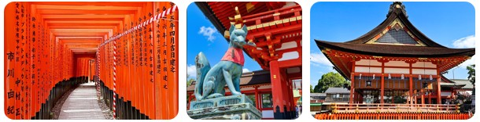
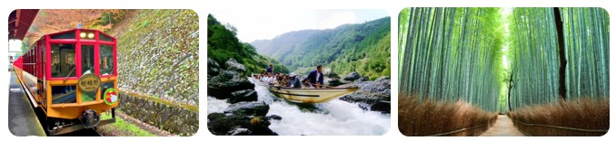
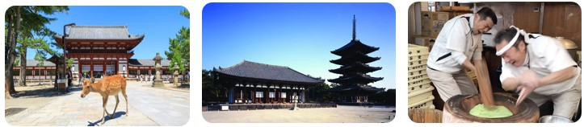
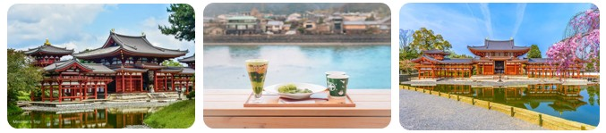
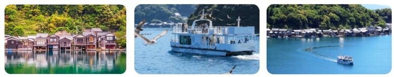
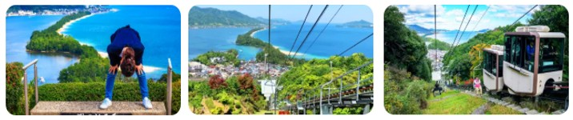
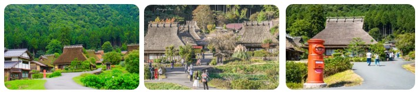

✈️ 旅程資訊
🏨 大阪住宿｜Via Inn Shinsaibashi 鄰近心齋橋站
✈️ 去程｜虎航Tigerair IT284｜高雄 07:00 → 關西 10:55
✈️ 回程｜虎航Tigerair IT285｜關西 12:00 → 高雄 14:00
10/15（四）
抵達大阪｜心齋橋
05:00
抵達高雄機場，準備搭機
07:00
✈️ IT284 高雄 → 關西
10:55
🛬 抵達關西機場
上午
🧳 RINKU PREMIUM OUTLETS 行李寄放後購物 中餐美食街→ 結束後前往大阪
下午
🏨 飯店 Via Inn Shinsaibashi、整理行李 休息
晚上
🍲 晚餐すき焼き藤もと 壽喜燒 訂位18:15／心齋橋
10/16（五）
伏見稻荷＋嵐山小火車＋保津川遊船
早餐
🏨 飯店早餐
08:30
🚶 飯店出發
09:00
🚃 前往京都 搭乘09:00京阪電車
10:00
🦊 伏見稻荷大社

約3小時
⛩️ 參拜＋午餐(二擇一)
📍Salmon Noodle Kyoto(鮭魚拉麵)
📍洋食屋 スゥリール
13:38前
🚃 前往嵐山／搭乘JR前往京都轉車
下午
🚂 嵯峨野小火車14:05發車 車程約 20 分鐘
抵達後轉乘接駁車
🚢 保津川遊船(90分)
🎋 嵐山竹林小徑 / 🛍️ 嵐山商店街

返程
🚉 嵐山車站晚餐(二擇一)
📍Saganoya (嵐山車站前)定食
📍嵐山咖哩
晚上
🏨 返回大阪飯店，休息後會餓可以居酒屋宵夜
10/17（六）
奈良＋宇治
上午
🚃 近鐵難波 → 奈良 約34分鐘
中午
🦌 奈良散步・中谷堂・東大寺

下午
🚃 JR奈良 → 宇治 約43分鐘
🍵 宇治・平等院・商店街周邊

📍地雞家心 中餐定食系列
📍蓮華茶屋
📍中村藤吉 平等院店(可以看到河景)
📍京鴨kitchen 善 鴨肉漢堡
晚上
🏨 京阪電車返回大阪
晚餐
🏨 🍜 家系ラーメン 頂㐂家 長堀橋店 拉麵
10/18（日）
天橋立＋伊根＋美山
06:30
🚶 飯店出發日本橋車站2號出口
✔️路上超商買早餐及水
07:05
📍 KKday 集合
07:20
🚌 出發前往天橋立・伊根・美山 車程約2.5小時
09:50
🛶 伊根舟・屋伊根灣遊覽船 (1小時)

11:30
🌊 天橋立觀景台 2小時(中餐記得預留1小時)

中餐
天橋立商店街
📍千歲茶屋總店 天婦蘿蕎麥麵
📍天の橋立 松吟
09:50
🏘️ 美山茅屋部落 (40分)

15:40
返程車程約2.5小時
晚餐
🍽️ 新世界・通天閣
📍Usagiya 大阪燒
📍達摩串炸
10/19（一）
大阪 → 關西機場 → 高雄
06:30
🍳 飯店早餐
07:00~7:30
🧳 回房間整理、退房、飯店出發前往關西機場
09:00
🛫 抵達機場
12:00
✈️ IT285 關西 → 高雄
14:00
🛬 抵達高雄
📌 出發前提醒
• 第二天行程小火車及遊船有預定時間要注意別遲到
• KKday 一日遊：前一晚準備零食、飲料與行動電源
• 去程機場：建議 05:00 左右抵達高雄機場
• 回程：預留三小時 09:00 前抵達關西機場